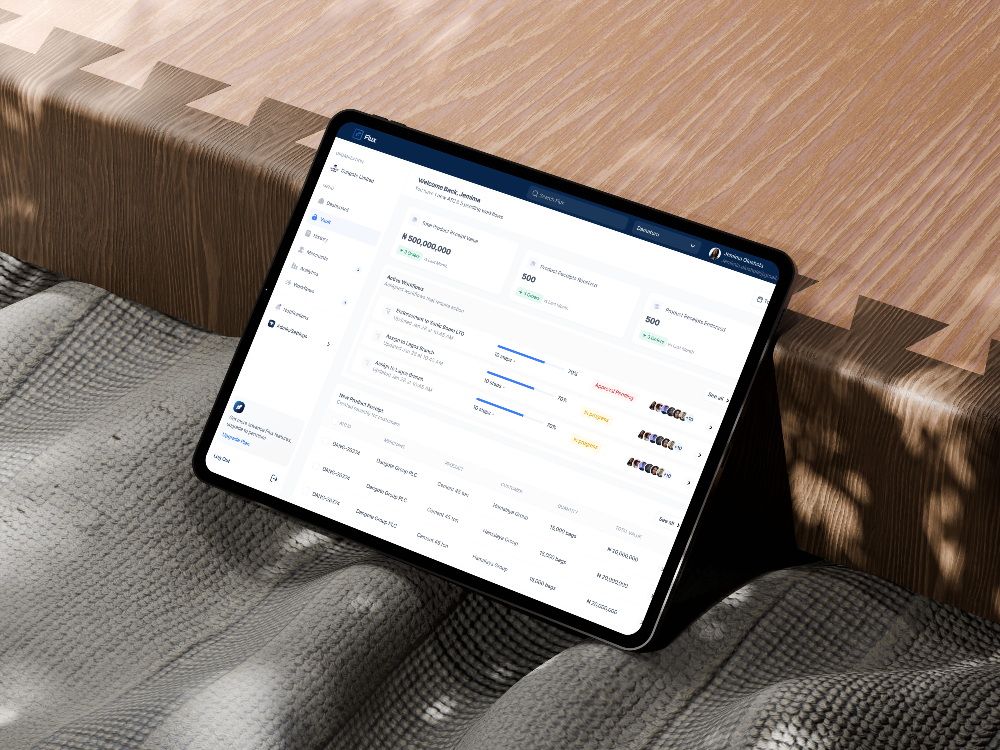
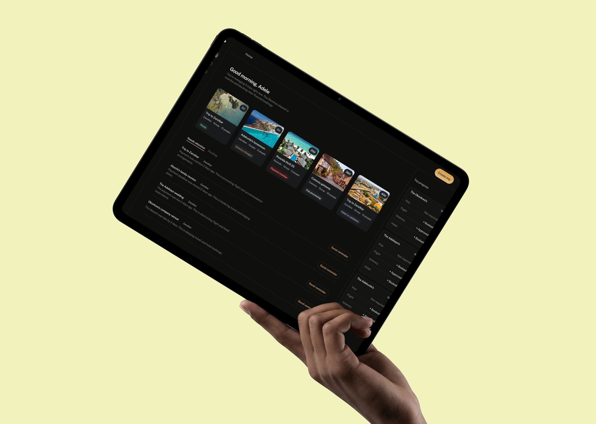

Ẹsọ́sa · Lagos, Nigeria

2023–26 · Fintech · Multi-role platform
Inventory-backed lending across banks, merchants and distributors — three roles who must not see each other’s numbers, one platform that has to hold them apart.
View case study →
2024–now · Healthtech · Australia
A session lifecycle that has to hold across booking, the room and the invoice. One state machine, three surfaces, Medicare rules.
View case study →

Stealth · B2B SaaS · Travel
A per-trip email pipeline for travel agents who live in their inbox — three agent interviews and one architectural bet, still waiting for real users.
View case study →
Intro
duction
I design for systems that earn trust.
I’m a Product Designer working in fintech, logistics, and operations. The kind of products where a confusing flow doesn’t just frustrate someone, it costs a business money or breaks a process that real people depend on.
I lead the full design process, from research through to shipped product. I care most about the part where messy, complex problems get structured into something that actually makes sense to use.
CarePlan 365
Product Designer 2024 – Present
Flux
Product Designer 2023 – 2026
Hermaid
Product Designer 2024
Tragent
Founding Designer Stealth